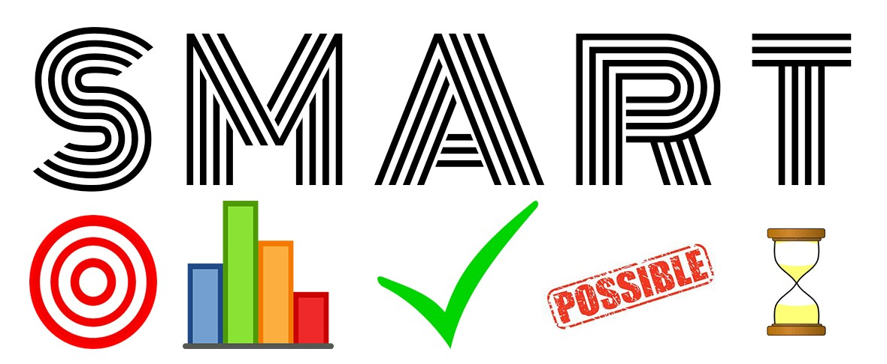

Planung
SMART
SMART steht für die fünf Krieterien an denen sich jedes Ziel orientieren sollte.Spezifisch
Oft sind Probleme bei einem Projekt, dass es Unklarheiten gibt und Aufträge zu sehr verallgemeinert werden. Undeuliche Vorstellungne reichen nicht aus, was es braucht sind konkrete uns präzise Aussagen. Mit detailliert ist nicht gemeint, dass eine ausschweifende Beschreibung gemacht wird. Am besten werden die Ziele in einzelnen, prägnanten Sätzen zusammengefasst und auf den Punk gebracht.
Messbar
Um rückblickend eindeutig feststellen zu können, ob mas das Ziel erreicht hat, muss dieses von Anfang an so formuliert werden, dass es messbar ist. Beispielsweise wenn es um Kostenersparnisse oder die Erhöhung des Gewinns geht. Die Summen sind immer messbar, genau wie andere quantitative Ziele, etwa Zeit oder die Menge des Outputs einer Abteilung.
Akzeptiert
Das gewünschte Ziel kann nur erreicht werden, wenn alle Beteiligten hinter diesem Ziel stehen. Es wichtig das das Ziel positiv formuliert wird, dass es anregt und motivation auslöst.
Realistisch
Übertriebener Ehrgeiz kann sich schnell in Frustration umwandeln. Es ist wichtig realistisch vorzugehen. Werden die Ziele unrealistisch formuliert, ist die anfängliche Motivation schnell weg. Das Ziel ist es, die Ziel herausfordern, aber realistisch machen.
Terminiert
Jedes Ziel braucht einen zeitlichen Rahmen, eine Deadline, bis zu der etwas erledigt werden soll. Der Termin des Ziels ist dabei gleichzeitig der Kontrollpunkt.
IPERKA
Der Begriff IPERKA setzt sich aus den 6 Phasen eines Projektes zusammen. Jeder dieser Schritte sollte ausgeführt werden, denn nur so kommt man zu einem optimalen Projekt.
Informieren / Kundenbriefing
Als erstes wenn ein Projek gestartet hat muss man sich informieren. Datzu gehören Fragen zum Budget, Dauer, Corporate Identity und Termine. Die Kundenwünsche und desen Anforderungen mussen beschaffen werden und das Ziel des Projeket wird bestummen.
Planen
Beim Planen muss ein Zietplane erstellt werden. Eine Offerte muss erstellt werden und ein Story- und Moodboard muss ausgedacht werden. Am besten wird hierfür recherchiert und Inspiration gesammelt. Wichtig ist, dass ein Grobkonzept abgeferigt wird.
Entscheidung / Plan festhalten
Der Kunde muss sich nun für ein Storyboard entscheiden und mit ihm muss ebenfalls das Konzept besprochen werden. Ist die geschehen muss die Arbeitsaufteilung erstellt werden und ein genaues Drehbuch entworfen werden. Nicht zu vergessen ist es, Pufferzeiten einzuberechnen falls einer dieser Schritte nicht wie geplant funktioniert.
Realisierung
Bei der Umsetzung wird das Rohmaterial erstellt und geschnitten. Der Ton muss bearbeitet werden und Animationen mussen angefertigt werden.
Kontrolle / Finalisierung
Um ein gutes Video zu haben müssen Reaktionen eingeholt werden (Screening). Die Anfordeungen des Kundens müssen überprüft werden und das Video muss korrekt gerendert werden im richtigen Format. Ist die alles geschehen kann das Produkt dem Kunden übergeben werden und allenfalls publiziert werden.
Auswertung / Abschluss
Das Projekt ist mit der Abgabe noch nict beendet. Das Resultat muss präsentiert werden. Durch eine Selbsteflexion und Feedback des Kundens kann beim nächsten Mal das Projekt noch reibungsloser ablaufen als beim letzten mal.